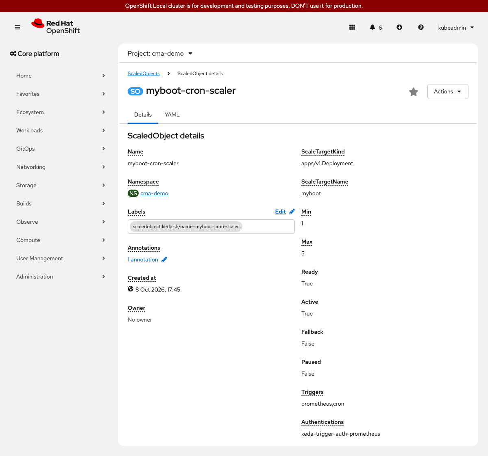

Custom Metrics Autoscaler on OpenShift Local
This step adds a cron trigger to the existing Prometheus-based ScaledObject, so that myboot pre-scales to a minimum of 3 replicas during business hours (Monday through Friday, 09:00-17:00 UTC) regardless of current CPU load. It also covers the pause annotation, which lets you suspend autoscaling for a maintenance window without deleting the ScaledObject.
Prerequisites
-
Step 03 complete:
myboot-prometheus-scalerScaledObject andTriggerAuthenticationpresent -
ocCLI authenticated as cluster-admin
How It Works
When multiple triggers are defined on a ScaledObject, KEDA takes the maximum desired replica count across all active triggers. During business hours, the cron trigger sets a floor of 3 replicas. If the Prometheus trigger simultaneously computes a higher value - say 4 replicas - KEDA uses 4. Outside business hours the cron trigger is inactive and only the Prometheus trigger drives scaling, so the deployment can scale down to minReplicaCount: 1 during idle periods.
The pause annotation (autoscaling.keda.sh/paused-replicas) sets a fixed replica count and disables all scaling logic until the annotation is removed. This is the standard way to freeze a deployment during a deployment window or incident investigation.
Steps to Apply
1. Replace the Prometheus ScaledObject with the combined cron + Prometheus ScaledObject
What: Delete the step 03 ScaledObject and apply the new one that includes both a cron trigger and the Prometheus trigger.
Why: KEDA does not allow two ScaledObject resources to manage the same Deployment. The combined ScaledObject replaces the Prometheus-only one from step 03.
oc delete scaledobject myboot-prometheus-scaler -n cma-demo --ignore-not-found --context crc
oc apply -f 04-cron-trigger/scaledobject.yaml --context crcscaledobject.keda.sh/myboot-prometheus-scaler deleted
scaledobject.keda.sh/myboot-cron-scaler createdoc get scaledobject myboot-cron-scaler -n cma-demo --context crcNAME SCALETARGETKIND SCALETARGETNAME MIN MAX TRIGGERS READY ACTIVE
myboot-cron-scaler apps/v1.Deployment myboot 1 5 prometheus, cron True Falseoc describe scaledobject myboot-cron-scaler -n cma-demo --context crc | grep -A 5 Triggers2. Observe the cron trigger during business hours
~5 minutes (pods start immediately; Prometheus metric may push briefly to 5 replicas during JVM startup, then settles to 3 as CPU drops)
What: Check the current replica count and confirm it is at least 3 during a business-hours window (Mon-Fri 09:00-17:00 UTC).
Why: The cron trigger fires silently - there is no event to wait for. The best way to confirm it is working is to check the replica count at a time when the cron window is active.
If your local time is outside 09:00-17:00 UTC on a weekday, adjust the cron expression in 04-cron-trigger/scaledobject.yaml to a window that includes right now. Change start and end to a time 2-3 minutes in the future, apply the manifest, and watch the replica count.
|
oc get deployment myboot -n cma-demo --context crcNAME READY UP-TO-DATE AVAILABLE AGE
myboot 3/3 3 3 20moc describe scaledobject myboot-cron-scaler -n cma-demo --context crc | grep -A 20 "Status:"Status:
Conditions:
Message: Scaling is performed because triggers are active
Reason: ScalerActive
Status: True
Type: Active
Triggers Activity:
s0-prometheus:
Is Active: true
s1-cron-UTC-09xx1-5-017xx1-5:
Is Active: true3. Pause autoscaling with an annotation
What: Add the autoscaling.keda.sh/paused-replicas annotation to the ScaledObject to drain the deployment to zero replicas and freeze it.
Why: During a maintenance window or planned downtime, you want full control over the replica count without KEDA reacting to CPU or cron schedules. Setting the value to 0 drains all pods immediately. Any non-negative integer works; KEDA ignores all triggers while the annotation is present.
oc annotate scaledobject myboot-cron-scaler \
autoscaling.keda.sh/paused-replicas="0" \
-n cma-demo \
--context crcscaledobject.keda.sh/myboot-cron-scaler annotatedWait about 15 seconds for the deployment to drain:
oc get pods -n cma-demo -l app=myboot --context crcNo resources found in cma-demo namespace.oc get scaledobject myboot-cron-scaler -n cma-demo --context crcNAME ... READY ACTIVE FALLBACK PAUSED
myboot-cron-scaler ... True True False True4. Resume autoscaling
What: Remove the pause annotation to let KEDA resume normal scaling.
Why: The annotation persists until explicitly removed. Removing it gives control back to the configured triggers immediately.
oc annotate scaledobject myboot-cron-scaler \
autoscaling.keda.sh/paused-replicas- \
-n cma-demo \
--context crcscaledobject.keda.sh/myboot-cron-scaler annotatedoc get scaledobject myboot-cron-scaler -n cma-demo --context crcNAME ... READY ACTIVE FALLBACK PAUSED
myboot-cron-scaler ... True True False False
What This Solves (Compared to Step 03)
| Problem from Step 03 | How This Step Solves It |
|---|---|
Scaling is fully reactive: replicas only increase after load arrives |
The cron trigger pre-scales to 3 replicas before the business-hours traffic window starts |
No way to pause scaling without deleting the ScaledObject |
The |
What This Does NOT Solve (Yet)
| Remaining Problem | Notes |
|---|---|
Cron schedules are hardcoded in the manifest |
To change the window, edit the manifest and reapply. There is no dynamic schedule API in KEDA today. |
Scale-to-zero during off-hours |
Set |
Alternatives Considered
| Approach | Notes |
|---|---|
Use a separate ScaledObject for cron only |
Two ScaledObjects on the same Deployment conflict. Combining triggers in one ScaledObject is the correct approach. |
Scale to zero outside business hours with a second cron trigger |
Valid for batch workloads with no latency requirement. For an HTTP-serving app with a Route, the cold start makes this less useful without a warming mechanism. |
Reset
Delete the combined ScaledObject. Resources from step 03 (TriggerAuthentication, Role, RoleBinding, ServiceAccount) remain in place after this reset.
oc delete scaledobject myboot-cron-scaler -n cma-demo --ignore-not-found --context crc
oc scale deployment myboot --replicas=2 -n cma-demo --context crc
oc wait --for=condition=available deployment/myboot -n cma-demo \
--timeout=120s --context crcTo tear down the full workshop, run the reset commands from each step in reverse order, then delete the namespace:
oc delete namespace cma-demo --context crc
oc delete rolebinding keda-operator-token-creator -n cma-demo --ignore-not-found --context crc
oc delete role keda-operator-token-creator -n cma-demo --ignore-not-found --context crc
oc delete rolebinding keda-trigger-sa-thanos-metrics-reader -n cma-demo --ignore-not-found --context crc
oc delete role thanos-metrics-reader -n cma-demo --ignore-not-found --context crc